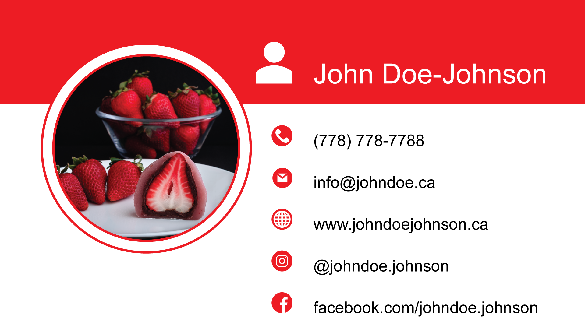
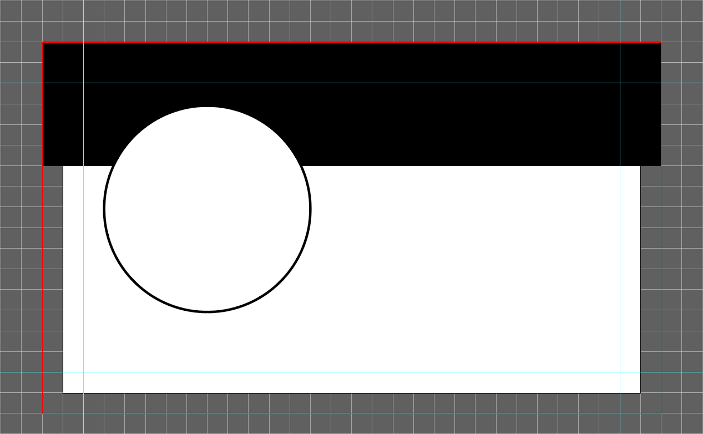
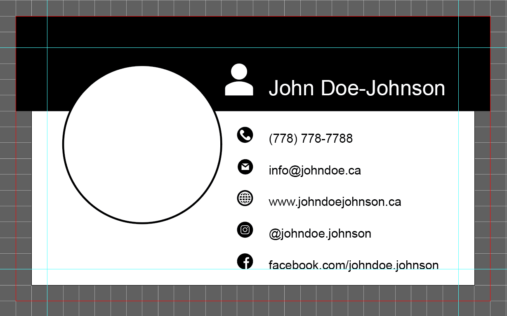
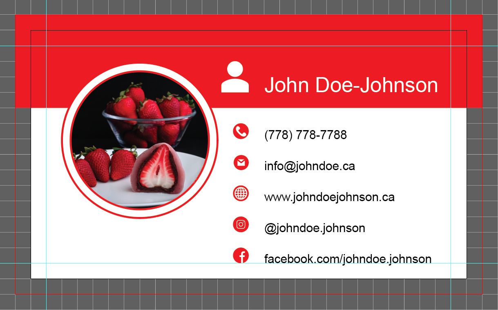
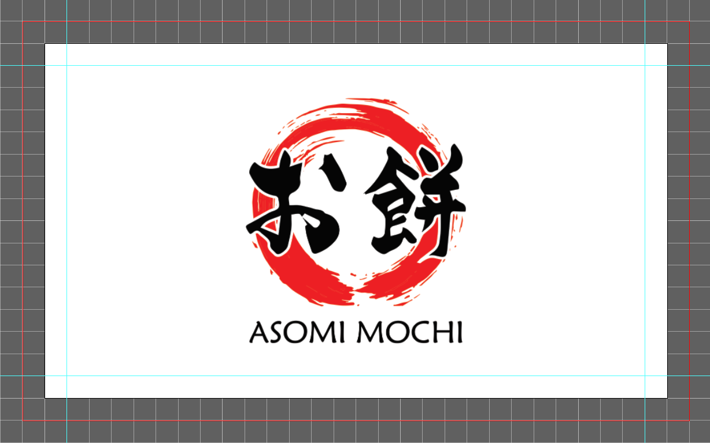

Programs Used
Illustrator
2018
This business card was designed for the owner of a Japanese dessert company. The client requested for a minimalist design that presented information efficiently with an adequate amount of white space.
I was given lots of creative control over the design which made it challenging to understand exactly what the client wanted. I was able to understand my client's requirements by involving them through the iteration process and making alterations based on their feedback.
Process

Provided client with layouts with this design chosen

Icons and information to visualize content spacing of template

Colors and images added to complete the design

Back of business card designed with company logo on white